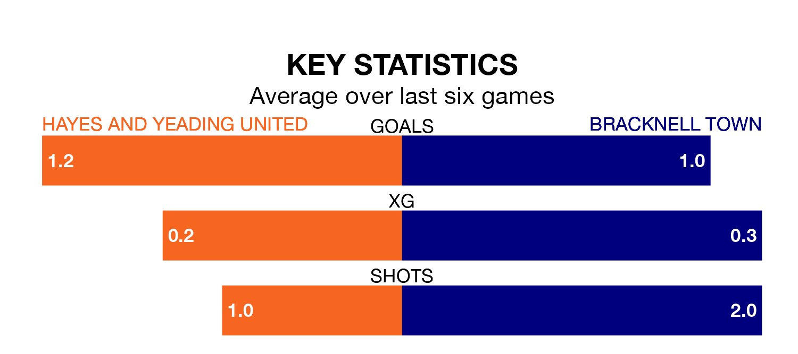

Hayes and Yeading United face Bracknell Town at the SKYex Community Stadium on late Tuesday looking to secure a first win in 11 Southern League Premier – South games.
Hayes & Yeading have lost five and drawn five matches since they last earned three points – against Basingstoke Town on October 24.
They face a Bracknell side who have won three and drawn two over that time.
Hayes & Yeading are 19th in the table after 23 games, of which they have won five and drawn eight, earning 23 points.
Bracknell are 10 places ahead of United in ninth, with 11 wins and three draws putting them on 36 points.
With 36 goals in 23 games so far this season, the home team are scoring at below the league average rate with 1.6 goals per game. And they are conceding at an average rate, letting in 38 goals at a rate of 1.7 per game.
Town, meanwhile, are above average scorers, with 1.8 goals per game, compared to a league average of 1.7. They have conceded 1.5 goals per game.
Over the last two years, Hayes & Yeading and Bracknell have played each other twice. Hayes & Yeading won one of them and they drew the other.
Their last meeting was on April 4, when Hayes & Yeading won 2-1 at home.
Hayes & Yeading's last match was on Saturday, a 1-1 draw against Tiverton Town.
Bracknell lost 1-0 against Didcot Town last time out, also on Saturday.
Updated: 14:53 (UTC), 16/01/24